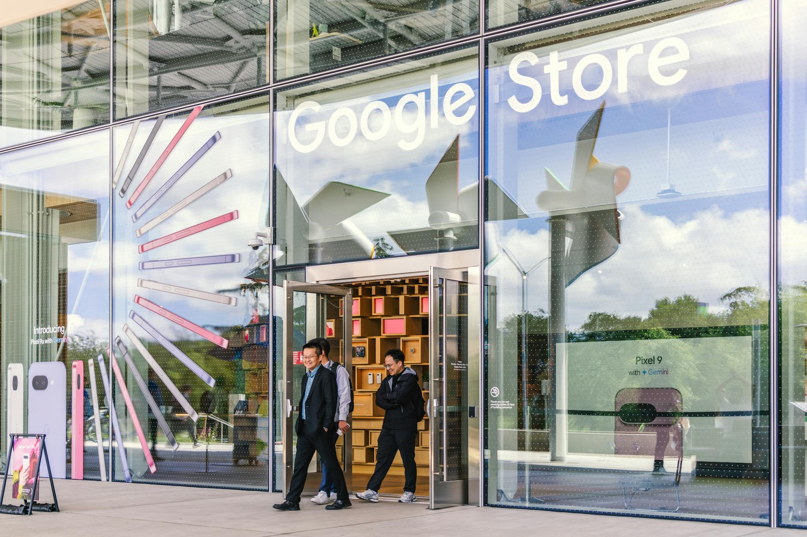

■ 说透 / SHUOTOU · 知览
SUBTITLE
同一周，Google 发布了需要付费订阅的 Gemini Ultra，又把 Gemma 4 以 Apache 2.0 彻底开源，这不是左手不知道右手在做什么，而是一套精心设计的双轨策略——用开发者生态筑墙，再让企业客户在这道墙里付钱。

4月8日这一周，Google干了两件方向完全相反的事。一边把Gemini Ultra的订阅价格大幅上调，面向企业和高级用户，明码标价，想用旗舰能力就得掏钱。另一边呢，同一周，Gemma 4以Apache 2.0协议彻底开源，四个尺寸，E2B、E4B、26B、31B，全系列免费下载，商用零限制，谁都能拿去跑。
你第一反应肯定觉得这两件事打架了——你左手把东西标高价，右手把差不多的东西免费送，这不是自己砍自己吗？
但你仔细看数字就会发现，这两个东西针对的根本不是同一群人。
Gemma 4 全系列开源
先说Gemma 4到底是个什么级别的东西，因为规格本身就很说明问题。四个尺寸覆盖了从手机端到服务器端的全场景，大尺寸的26B和31B两款模型都支持256K的上下文窗口——这个长度意味着你可以一次性塞进去大概20万字的文档，让它从头到尾读完再回答你，不用分段喂。而且全系列跑在一块80GB的H100显卡上就够了，不需要搞多卡集群，不需要花几十万搭推理环境，一台机器就能跑起来。
DATA — Gemma 4 规格
4个尺寸 — E2B / E4B / 26B / 31B，覆盖手机到服务器
256K — 原生上下文窗口（约20万字）
单块 80GB H100 — 全系列可运行，无需多卡集群
Apache 2.0 — 商用零障碍，无任何使用限制
在同级别的开源模型里，Gemma 4的跑分表现是领先的，性价比极高。对于一个中小团队来说，你不需要去买Gemini的API按量付费，也不需要订阅OpenAI的企业版，下载Gemma 4的权重，在自己的服务器上跑，成本几乎就是电费和一块显卡的折旧。
那Google为啥要把这种级别的模型免费送出去？它不怕Gemma把Gemini的付费用户抢走吗？我看到这个消息的时候也是这个反应。
说白了，不怕，因为用Gemma的人和用Gemini的人，从一开始就不是同一拨人。
用Gemma的是谁？是开发者，是创业公司的技术团队，是拿着开源模型自己搭应用、自己做微调的人。这群人在乎的是自由度、可控性、部署成本，他们不会去买Gemini的企业订阅，给他们一个免费的高性能开源模型，他们拿去用，在上面搭产品，这些产品最终要部署到哪里？要跑推理、要存数据、要用工具链——Google Cloud就在旁边等着呢。
用Gemini的是谁？是企业客户，是不想自己搭环境的大公司，是需要稳定的API、企业级SLA、安全合规、出了问题有人接电话的那种客户。这群人不在乎模型是不是开源的，他们在乎的是可靠性和省事，直接调API，按量付费或者签年框，Google负责一切。
一个是自己下厨的人，一个是去餐厅吃饭的人。 你把菜谱免费公开，不会让去餐厅吃饭的人变少，反而会让更多人学会做菜，其中一部分人做着做着发现自己需要更好的厨房——那就来租我的厨房。
Google 的双轨策略
那这个打法是Google新发明的吗？讲真，一点都不新。我第一时间想到的就是Android。你把时间拉回15年前，2008年，Google做了一个几乎一模一样的决策——把Android开源了。
你想啊，当时的智能手机市场，苹果的iOS是闭源的，微软的Windows Mobile也是闭源的，诺基亚的Symbian半死不活。Google把Android开源，免费给所有手机厂商用，三星拿去用了，HTC拿去用了，后来华为、小米、OPPO全都用了，Android在几年之内占据了全球智能手机超过70%的市场份额。
Google靠Android本身赚钱了吗？没有，一分钱都没收。但Android上面预装的是Google搜索、Google地图、Google Play商店、Gmail，每一个用Android手机的人，都是Google广告和服务的用户。Android是免费的，但Android上面的Google服务是赚钱的。
Gemma 4就是AI时代的Android。
开源底层，让所有人用上你的东西，让开发者在你的框架里搭应用，让企业在你的工具链里跑业务。底层免费，上层收费。你用得越多，你对Google的依赖就越深，你的数据在Google Cloud上，你的推理在Google Cloud上跑，你的应用用的是Google的API和工具链，到了那个时候，你换掉Google的成本比继续付费的成本高得多。
好，到这儿你可能觉得逻辑挺顺的——Google用开源圈开发者，用闭源收企业的钱，Android打法2.0，完美。但有个反面证据不能假装看不见。
Android的历史里，开源确实帮Google拿下了市场份额，但也带来了碎片化的问题。三星在Android上面套了一层自己的UI和应用商店，亚马逊拿Android改了一个Fire OS出来完全绕开了Google服务，中国市场的Android手机从来没有预装过Google Play。也就是说，开源意味着你没法控制别人拿你的东西去干什么，有些厂商用了你的底层，但上层的钱全自己赚了，一分钱都没流回Google。
那同样的事会不会在Gemma 4上重演？当然有可能。一个公司下载了Gemma 4的权重，在自己的私有服务器上跑，用自己的数据做微调，最终部署在AWS或者Azure上——Google的云服务一分钱都没碰到。Apache 2.0协议意味着你对此毫无办法，你不能在许可证里写"必须用Google Cloud部署"，那就不叫开源了。
但你再往前推一步，Google在AI这一轮的位置比Android时代其实更好。为啥呢？因为AI应用的开发不光是拿一个模型跑起来就完了，你还需要微调工具、需要向量数据库、需要推理加速、需要监控和日志、需要整套MLOps的工具链。Google在这些环节上的布局比任何一家云厂商都深——Vertex AI、TPU推理、BigQuery、Cloud Run，这些东西串起来是一套完整的AI开发和部署环境。你用Gemma 4入了门，发现Google Cloud上跑得最顺、工具最全、迁移成本最低，那你大概率就留下了。
这跟Android不一样的地方在于，Android时代你拿到源码就能自己编译一个系统出来跑，不需要Google的任何东西。但AI时代，模型只是第一步，后面的推理、训练、数据管线、工具链才是持续花钱的地方，而Google恰好在这些地方都有产品。
> 开源模型是Google递给你的第一杯免费咖啡，云服务才是你每个月的月卡。
Google现在有7.5亿月活用户在用Gemini相关产品，企业版的增长速度在过去几个季度一直在加速。这7.5亿人里，绝大多数用的是免费版或者轻量付费版，但他们的使用习惯、他们的数据、他们对Google AI工具链的熟悉度，全都在慢慢变成Google的壁垒。而Gemma 4的开源，是在另一侧——开发者侧——做同样的事情，让你习惯Google的模型、Google的API格式、Google的工具链，等你做大了需要企业级服务的时候，Gemini Ultra和Google Cloud就在那儿等着你。
那你回过头去看这一周的两个发布，逻辑就很清楚了。Gemini Ultra涨价，是因为企业客户已经被锁在里面了，他们需要的不是便宜，是稳定和好用，涨价他们也会续费。Gemma 4免费开源，是因为开发者还没被锁进来，你得先给他们一个进门的理由，免费就是那个理由。
两件事看起来方向相反，但我越想越觉得它们指向同一个目的——扩大Google在AI这一轮里的地盘。对已经进来的人收更多的钱，对还没进来的人降低门槛。
说到底，Google同时做开源和闭源，不是战略混乱，是它在用Gemma 4圈地，用Gemini Ultra收租。圈地的时候你得大方，门槛越低越好，最好免费。收租的时候你得值这个价，服务越好越贵。这套东西Google在Android上练了15年，现在搬到AI上，连节奏都是一样的。
> 铁路公司免费给沿线农民修路，从来不是做慈善——路修好了，粮食就得走铁路运出去。
— 01 —
ZAYEN知览
说透 · SHUOTOU · 知览